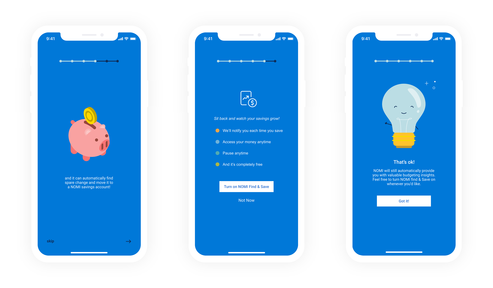
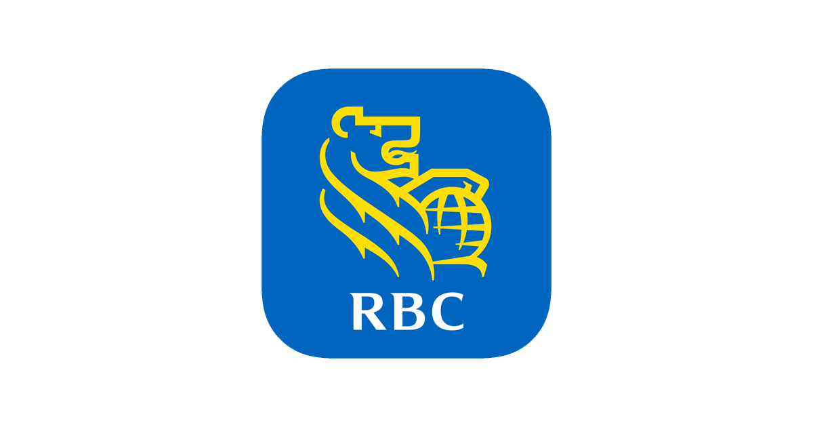
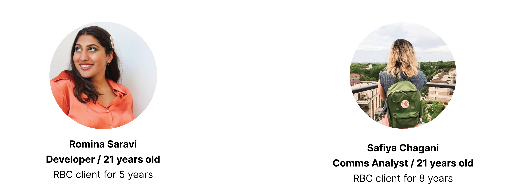
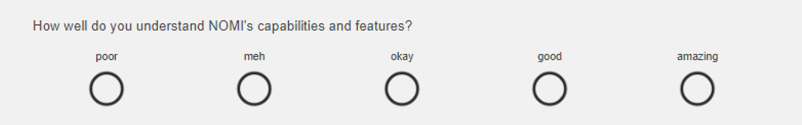
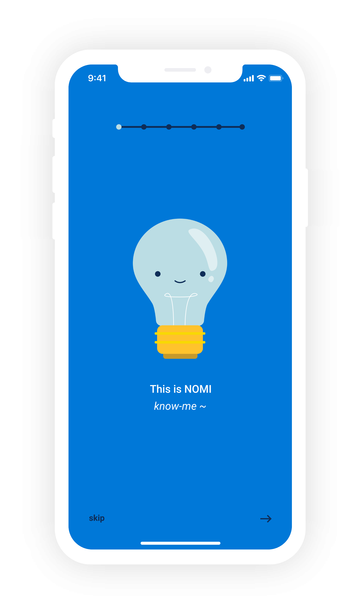
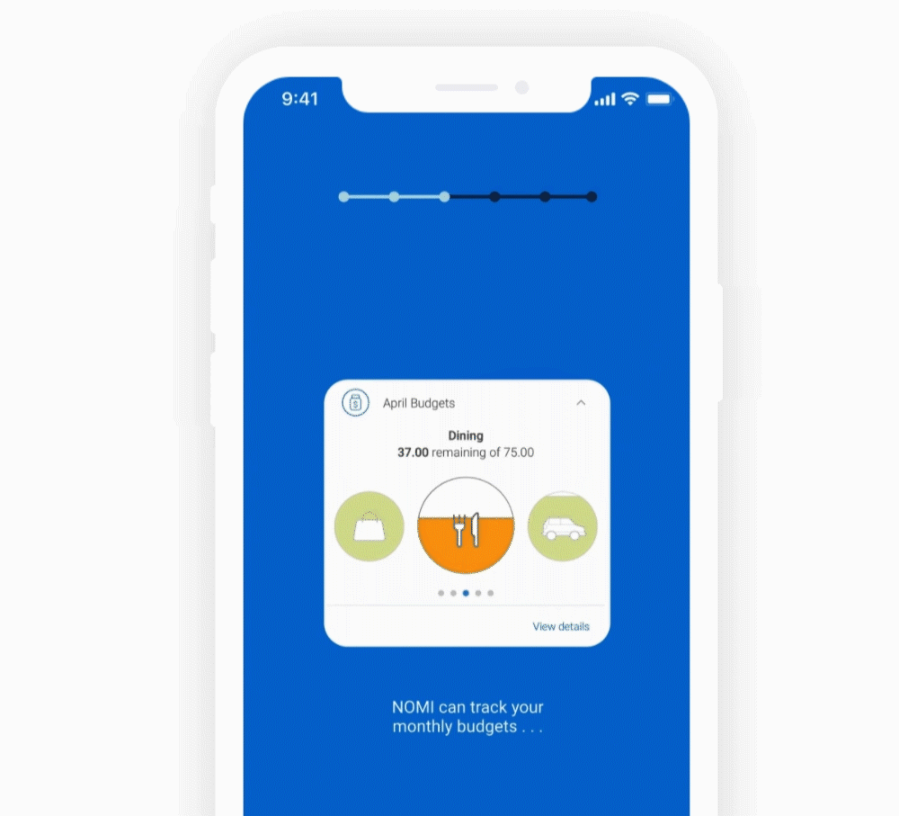
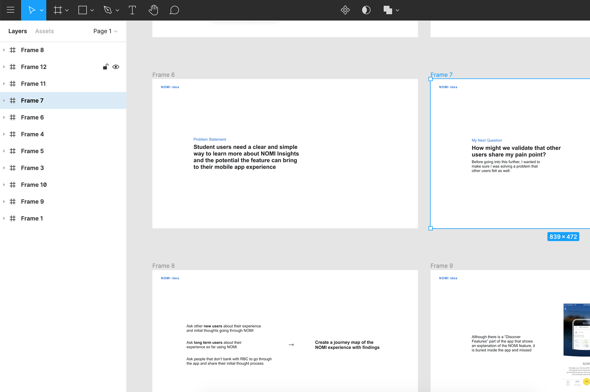
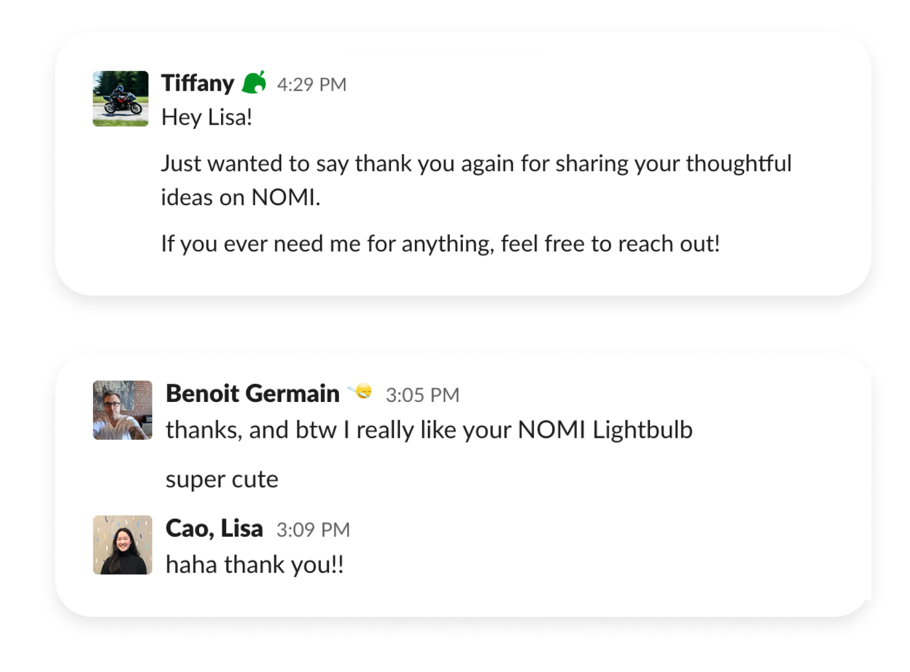

My Summer @ RBC Royal Bank
User Experience Designer / Solo Project / RBC Royal Bank / Summer 2020
What did I do? ✿
At RBC, I came up with an idea to improve the onboarding experience for one of the features on our mobile app and took the initiative to turn it into a side project. This was such a valuable experience and I could not have imagined that I was going to end up pitching it to our Director of Mobile Design and Senior Director/Product Owner of NOMI.
Here was my journey . . .
How did my solo project start? ✿
NOMI (know-me) is a feature on our mobile app that uses AI to help our users manage everyday finances by providing personalized trends, alerts, and overviews based on their spending and saving habits. It has helped save clients over $35 million and is one of the ways RBC is using technology to innovate the banking experience.
Since I joined RBC this summer as a Graphic Design Intern, I had to join RBC as a client as well and download our mobile app. I got to have a first impression of the RBC app and see it from a new user perspective.
Current home page
“What does this feature do?”
“What does NOMI stand for?”
“What does the light bulb and type mean?”
These were my first thoughts when I saw NOMI. It was my first time hearing about this feature and the info on the screen didn’t tell me a lot about it. That got me curious if other users experienced the same pain points and how I could maybe solve it. So I started on my side project to dive deeper into the problem space.
The Problem Statement ✿
Before starting my design process, I came up with a problem statement to focus my goals on.
Users need a more clear and simple way to learn more about NOMI and the potential the feature can bring to their mobile app experience
User Interviews ✿
After making my problem statement, I wanted to make sure I was solving the problem for other users as well and not just me. I decided to book two quick interview sessions with other RBC clients that have been using our mobile app for years to hear their experiences.
“I want to be able to use it more but I’m not really sure how”
~ RBC Mobile Banker
Some of the common learnings from the user interviews:
They don’t exactly know what NOMI was even though they had been mobile banking for many years.
They want to utilize the feature more but don’t know how.
They were introduced to NOMI Find or Save during the interview and were surprised they didn’t find it sooner. They said they would’ve been really interested in using it during the school year.
User Survey ✿
I also created a 5-minute survey to quickly gain insights from other RBC Mobile App users.
Some of the common learnings from the user survey:
39.03% gave meh/poor on how well they understand NOMI’s capabilities and features
46.34% gave meh/poor to if they know how to use NOMI to its fullest advantage
5/6 new users gave meh/poor on how well they understand NOMI’s capabilities and features
5/6 new users gave meh/poor to if they know how to use NOMI to its fullest advantage
My findings validated that new users struggled to understand the potential of NOMI. People can see the potential benefits that NOMI can provide but aren’t sure how to take full advantage of it. It also revealed that even though long term users continue to use the app more, many still have a poor understanding of the feature. This showed that first impressions and initial understanding are extremely important.
User Testing the Current Onboarding Process ✿
I also wanted the perspective of a new user going through the app for the very first time to hear what they have to say. This walkthrough was interesting because he's that segment of users that always skip through the onboarding. Onboarding skipping is a major issue on our app though, around 70% of users drop off after our second card so I wanted to figure out how I could reduce that.
User testee's sketch of his suggestion
Another sketch of his suggestion
He also drew me the above suggestions he had. The light bulb on the left was what he would’ve liked to see on the homepage instead of “You don’t have any new NOMI Insights to display at this time.” The right sketch was where he thought the chat bubble question icon could help him learn more about NOMI. The icon didn’t help him though so he suggested incorporating some NOMI info on the bottom.
Talking to him was where I got my idea to incorporate contextual learning which provides users full control of their onboarding experience and solves our current onboarding dilemma.
Competitive Analysis ✿
Contextual onboarding on TD Bank's mobile app
Contextual onboarding on Wealthsimple's mobile app
When comparing the onboarding process between other competitors, I noticed many of them also have a mixed onboarding method like ours with a variety of walk-through slides, pop-ups, and contextual learning. From what I noticed, the method they chose depended on what the landscape of the screen already looked like, the goals they're trying to achieve, and the nature of the feature itself. The most important learning from this competitive analysis though was that other apps are at an advantage by incorporating contextual learning.
Key Pain Points ✿
After conducting my research, these were the three key pain points I wanted to focus on:
1. NOMI Find & Save was hard to find and learn about
2. The ambiguity of the NOMI name and feature
3. Understanding how to take full advantage of the feature
Iterating ✿

First Iteration
In my first iteration, I wanted to make sure it was quick and concise. I didn't want to overboard the users with too much info but I also wanted to provide them with enough knowledge to learn how to take full advantage. I also considered the type users that skips through onboarding and adapted to their habits by having the process be at their control. They can choose to go through NOMI onboarding as soon as they download or they can come back it whenever they'd like.
Although my first iteration helped users learn more effectively using contextual onboarding, it didn't solve the issue of making NOMI Find & Save easier to discover and that was what I focused on in my second iteration.
Second Iteration
In my second iteration, I weaved in a card where users can get more info on NOMI Find & Save. This helped solve the first pain point I wanted to focus on. I wasn't satisfied with this as my final solution though. NOMI is a new and innovative feature that takes our mobile banking app to the next level and this onboarding process didn't feel as exciting to me as it deserves. That is what I focused on improving in my last solution.
My Final Solution ✿
After redesigning my iteration to create an onboarding process that builds more hype and excitement, this was what I came up with for my final solution and how they solved the 3 key pain points. Since our mobile app has two editions, a normal one and a student one, I focused on our student version and adjusted the illustrations and colour palette towards it.
1. Make NOMI Find & Save easier to find and learn about
To make learning about NOMI Find & Save more accessible, I decided to integrate it into the onboarding process after the initial NOMI introduction. Compared to the previous method of finding NOMI Find & Save (which was through the settings), this brought the information to the actual feature and is easier for users to discover. I also added a card that explains in detail what Find & Save does so that users can make a well-educated decision as finances are a big part of our lives.
2. Make the NOMI name and feature less ambiguous
From the general feedback I received, the name NOMI just flew by our heads. It wasn't obvious to us that it was supposed to stand for "know me" and it also wasn't obvious what the feature does. NOMI isn't a very traditional banking feature so having a detailed onboarding process is super important. In my solution, I gave NOMI a persona as a light bulb character. It makes NOMI memorable and helps put a distinct identity to the ambiguous name.
My very first card also shows the users what the meaning behind the name is. It acts like a fun introduction and quickly shows the value behind the clever branding.
Another reason why NOMI is a little ambiguous to new users is that there's a buffer period between when NOMI is waiting for more transactions to make accurate predictions and when the first insights are shown. During that period, NOMI is blank and says, "You don't have any new NOMI insights to display at this time." Which from my user research, doesn't tell new users much and makes them more confused as to what the feature does. That is why in my onboarding process, as you can see above, I decided to add cards that showed what the feature could potentially look like after NOMI collects enough data. This removes the ambiguity and gives people something clear to look forward to.
3. Help users better understand NOMI's capabilities and how to take full advantage of the feature
I think these two parts go hand in hand to create an effective and successful onboarding process. People need to fully understand everything about a feature in order to understand how to take full advantage, which is the ultimate goal.
Throughout my whole process, I considered this and made sure every piece of information a user may need is easily found and simple to understand. I also considered this when writing the type on my screens. I carefully chose my words and thought about the impact each line would make.
For example, on the left is part of the screen that introduces NOMI. I emphasized the innovative AI that powers NOMI and how it helps users take the stress out of finances with its automatic insights. That way users can have a clear understanding of what it does and how they can make the best use of NOMI's automation powers.
Pitching My Idea ✿
A notification that made me panic
When I was conducting my user research, my side project started gaining a lot of traction on the Mobile Design Team. Since I decided to send my survey out to our general RBC Slack channel with hundreds of convenient RBC mobile app users, it got noticed by Benoit Germain, the Product Owner of NOMI, who reached out to me to learn more about my idea and solution.
I ended up pitching my idea to a Senior Product Manager, our Director of Mobile Design, and our Senior Director/Product Owner of NOMI. I spent a whole week frantically preparing my slide deck and making sure I included everything from the research to the business value. I knew I wasn't going to get another opportunity like this so I wanted it to be perfect. They ended up loving it and taking it back to their team to discuss more!
Learnings and Curiosities ✿
Coming up with this side project and working on it in my spare time between my normal day-to-day projects has been such an amazing experience. I wish I had more time to conduct some user testing to see if any areas were unclear or confusing but this journey has been so memorable and has taught me so many valuable technical and soft skills. I also got to meet so many talented people in the process!
Since I started on this project in the latter half of my term . . .
I still have some curiosities left to explore:
How could contextual onboarding be applied to our other features?
I based my illustrations off of the current light bulb icon but is there another symbol that could portray NOMI more effectively?
If more features get added to NOMI, would the onboarding process also lengthen? How might we ensure we give our users all the tools while still keeping it simple?
I ran out of time at the end for user testing but how would I have user tested my prototype to ensure that the problem was solved? What questions could I have asked?